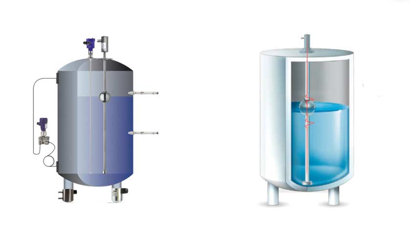

¿Qué es un sensor?
Un sensor es un dispositivo tecnológico que tiene la capacidad de percibir ciertos estímulos del exterior y transformarlos en impulsos eléctricos, que pueden ser interpretados por ordenadores u otras máquinas.
En palabras simples, un sensor es un traductor que puede explicar en un lenguaje común para las máquinas cualquier propiedad del ambiente (física, química, sonora, lumínica…).
Las lecturas de un sensor se pueden usar para medir variaciones en las condiciones de una determinada área, accionando respuestas automáticas de otros dispositivos como consecuencia: encender alarmas, apagar ciertas características, encender las naves de montaje y más.
Clasificación de sensores
Los sensores se pueden clasificar de acuerdo con un conjunto de características diferentes y no excluyentes:
- Según principio físico de funcionamiento:final de carrera, termoresistivos, capacitivos, inductivos, etc.
- Según principio de funcionamiento:activo/pasivo. En los sensores activos, la magnitud física a medir proporciona la energía suficiente para generar la señal de salida (ej. Termoeléctrico, fotoeléctrico, magnetoeléctrico, piezoeléctrico). Los sensores pasivos necesitan una fuente de alimentación externa (ej. Resistivos-Termorresistivo, Capacitivos, Inductivos…).
- Según señal eléctrica generada:analógica/digital. Un sensor analógico puede tomar cualquier valor dentro de unos determinados márgenes. En el caso de las señales analógicas es imprescindible el uso de circuitos de acondicionamiento. Los sensores digitales toman un número finito de valores.
- Según variable física medida:presencia/proximidad, presión, temperatura, humedad, velocidad, caudal, etc.
- Según rango de valores que proporciona:de medida/todo-nada. Los sensores de medida proporcionan a la salida todos los valores posibles correspondientes a cada valor de la entrada (ej. Sensor analógico termorresistivo). Los sensores todo/nada, utilizados en sistemas discretos, detectan si la magnitud está por encima de determinado valor. Su salida solo puede tomar 2 valores diferentes. Son ejemplos de este tipo de sensores los que indican si se ha producido presencia/ausencia de un objeto en las proximidades del sensor.
Tipos de sensores y sus características
Según el tipo de variable que pueda percibir e interpretar un sensor, se pueden definir varios tipos. Cada uno de ellos tiene propiedades únicas que los hacen útiles en escenarios muy específicos. A continuación, explicaremos los más importantes en el sector industrial:
Sensores de presión
Los sensores de presión permiten determinar el nivel de presión que ejerce un fluido dentro de un espacio definido. A través de esta medición se pueden controlar un sinfín de acciones dentro de una industria. Son especialmente demandados en seguridad industrial para la prevención de eventos catastróficos.
Una gran cantidad de espacios son susceptibles a la medición de presión, usualmente los compartimientos internos de las maquinarias o las calderas de evaporación.
Los sensores de presión pueden usarse para obtener otras variables como la cantidad de flujo que circula por un espacio cerrado, la velocidad e incluso el contenido de ciertos envases, si es que se conocen algunos datos básicos del producto.
Galgas extensiométricas
Los sensores de galgas extensométricas tienen un elemento de resorte que se deforma cuando se aplica fuerza. El material varía proporcionalmente en su resistencia eléctrica a medida que varía su estructura. Con los cambios de presión, las fluctuaciones en las lecturas de resistencia y voltaje se toman como señales eléctricas. Luego, estos se calibran a una lectura de presión equivalente y el sensor los muestra.
Los sensores de galgas extensométricas son particularmente favorables para tareas de monitoreo a largo plazo. Son el tipo de sensor más utilizado debido a su disponibilidad y versatilidad.
Sensores de temperatura
Los sensores de temperatura son los más utilizados dentro del ámbito industrial y ayudan a medir la diferencia de energía calórica que existe entre un punto de referencia y el campo que se está midiendo, convirtiendo dichos datos en salidas eléctricas. Miden el calor.
Los sensores de temperatura suelen funcionar a través de resistencias, aunque hay muchas formas de operarlos. Fusionan en una cantidad masiva de equipos dada su naturaleza. Con ellos se puede medir: el nivel de trabajo de un equipo, detección de anomalías en circuitos, controlar ciclos de enfriadores y mucho más.

Sensores de posición
Los sensores de posición, tal como lo indica su nombre, permiten medir la posición lineal o angular de un objeto con respecto a un plano (o usándose a sí mismo como referencia), para transformarla en una señal eléctrica que puede ser interpretada por un sistema de control mayor.
Después de los sensores de temperatura, los sensores de posición son los dispositivos de captación de magnitudes más utilizados a nivel industrial.
Estos dispositivos permiten controlar el movimiento de todo tipo de equipos de robótica para la realización de una infinidad de trabajos que requieran la reubicación de piezas como brazos mecánicos, soldadores o cortadores.
Sensores de velocidad
Los sensores de velocidad ayudan a detectar el lapso de tiempo que existe entre los cambios de posición de un objeto. Miden la velocidad de un cuerpo con relación a un punto de referencia. Los datos obtenidos son transformados en impulsos eléctricos.
Los sensores de velocidad tienen usos puntuales, como la detección de movimiento en un vehículo, la medición de trabajo en una banda de caucho, la velocidad de desplazamiento de un equipo industrial, entre otras.

Sensores de caudal
Los sensores de caudal recogen las velocidades del flujo de aire o líquidos. Los sensores de caudal usan diferentes principios de medición. Los sensores de caudal para líquidos funcionan por ejemplo sobre la base de ultrasonidos. Sensores de caudal para profesionales para la inspección y controlEsta medición sin contacto tiene la ventaja que los sensores no están expuestos a golpes de ariete y medios sólidos. Por otro lado, los sensores de caudal son utilizados en el sector de calefacción, ventilación y climatización para el análisis de la velocidad del aire.
Mediciones que usan el principio manométrico de una película térmica permiten trabajar en un amplio rango de temperatura y caudal. Los sensores de caudal de la serie EE 75 permiten determinar la velocidad del aire hasta 40 m/s con temperaturas hasta 120 °.Estos sensores de medición se pueden montar en conductos de ventilación. Otra manera de medir los canales de velocidad del aire es a través de sensores en cruz. Estos tienen como señal de salida una presión diferencial, que es proporcional a la velocidad del flujo de aire. Con la ayuda de las unidades de análisis conectadas (sensores de presión diferencial) permite calcular la velocidad del flujo de aire y el volumen de flujo Debido a que muy a menudo es necesario el análisis de la velocidad del aire, existen en la práctica muchos otros métodos de medición.
Sensores de nivel
El Sensor de nivel es un dispositivo electrónico que mide la altura del material, generalmente líquido, dentro de un tanque u otro recipiente.
Integral para el control de procesos en muchas industrias, los Sensor de nivel se dividen en dos tipos principales. Los Sensor de nivel de punto se utilizan para marcar una altura de un líquido en un determinado nivel prestablecido. Generalmente, este tipo de sensor funciona como alarma, indicando un sobre llenado cuando el nivel determinado ha sido adquirido, o al contrario una alarma de nivel bajo.
Los sensores de nivel continuos son más sofisticados y pueden realizar el seguimiento del nivel de todo un sistema. Estos miden el nivel del fluido dentro de un rango especificado, en lugar de en un único punto, produciendo una salida analógica que se correlaciona directamente con el nivel en el recipiente. Para crear un sistema de gestión de nivel, la señal de salida está vinculada a un bucle de control de proceso y a un indicador visual.
Sensores de aceleracción
Los acelerómetros industriales de tipo piezoeléctrico son habitualmente empleados en la monitorización de máquinas. Su objetivo es detectar vibraciones anormales producidas por el desgaste de los diferentes elementos en una máquina, como cojinetes, rodamientos, silentblocks, etc.
La aplicación de estos acelerómetros industriales nos permite una mejor conservación de la máquina y sus componentes, gracias a un mantenimiento preventivo. Existen diferentes formatos según sea su aplicación, más o menos protegidos, con diferente formato y tipo de salida de cable, encapsulados variados, etc.
La elección de un modelo u otro dependerá de la máquina en sí y sus condiciones de trabajo.
Sensores de vibración
Un sensor de vibración es un dispositivo que mide la cantidad y frecuencia de vibración en un sistema, máquina o pieza de equipo determinado. Esas medidas se pueden usar para detectar desequilibrios u otros problemas en el activo y predecir averías futuras.
Un sensor de vibración se conecta directamente a un activo o lo monitorea de forma inalámbrica. Una vez colocado, detectará las vibraciones del activo a través de varios medios, según el tipo de sensor. Con el tiempo, obtendrá dos tipos de datos del dispositivo:
Frecuencia
El primer tipo de datos es la frecuencia, o con qué frecuencia ocurre la vibración. Al realizar un seguimiento de cuándo se producen picos de vibración en un activo determinado, podrá identificar las causas principales.
Intensidad
El segundo punto de datos que obtendrá es la intensidad de la vibración a medida que ocurre. Cuanta más vibración tenga de un equipo, mayores serán las mediciones de intensidad.